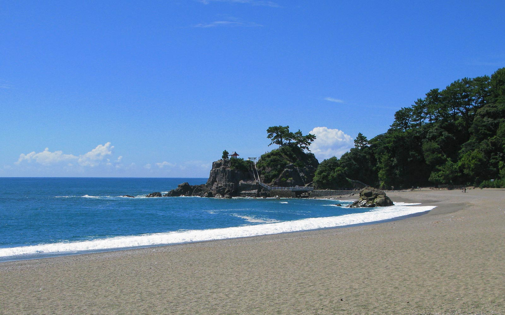

Exploring the best of Japan
With so much on offer why not use your holiday to uncover more of Japan's islands, cities and rural landscapes?
With excellent travel links and a variety of escorted tours you can tick off more places on your bucket list than you might think!
Whilst most travellers will certainly start off their trip with a visit to Tokyo why not add extra dimension to your trip by visting the southern
island of Kyushu? Or perhaps you'd enjoy a stay up north in Hokkaido where you can explore stunning nature parks and world-class winter sports!
Japan's Islands
Japan has four main islands, Honshu, Hokkaido, Shikoku and Kyushu. The main island Honshu is in central Japan, it's where you'll find the enthralling city of
Tokyo, cultural Kyoto and the iconic Mount Fuji. Most travellers will head here to get their fill of culture, heritage and incredible landscapes.
Marvel at Tokyo's soaring skyscrapers and head to the top of Tokyo Tower in Shiba Park - the second largest building in the world!
For all things tech and electronics you'll want to visit Akihabara. Here you'll find a range of electronics retailers, venues that specialise in Anime,
Manga and video games.
If you want to dicover the more serene side of Tokyo, discover the beauty of the city's oldest temple Sensō-ji located in Asakusa or visit the Imperial
Palace in Tokyo's most up-market district - Ginza, where you can also enjoy a spot of luxury shopping.
In central Honshu, discover the city of Kyoto, famed for picture-pefect gardens lined with cherry blossoms, Zen temples, grand palaces and shrines and traditional Geisha entertainment.

The second largest island, Hokkaido is located in northen Japan. The island boasts stunning national parks, scenic lakes and glorious mountain peaks.
Adventurers can enjoy hiking during the summer months or take to the slopes during winter. Niseko Mt. Resort Grand Hirafu ski resort is famous for it's
fine quality powder snow or if relaxtion is more your thing why not enjoy a soak in a volcanic hot spring?
A trip to Daisetsuzan National Park,
the largest national park in Hokkaido is perfect way for nature lovers to enjoy the islands stunnig scenery, countryside and wild life!
If it's rural landscapes and relaxation you're after head south of Japan where you'll find the islands of Shikoku and Kyushu. Discover traditional villages, historic sites and temples and pretty gardens. Why not visit what is thought to be the oldest hot springs in Japan, Dogo Onsen Honkan? The islands boast sub-tropical climates so you can enjoy warm white sand beaches after a day of exploring.
